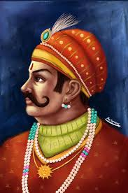
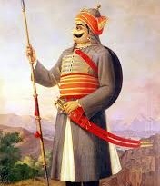
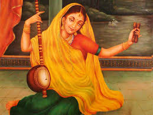

Rani Padmini, known for her beauty and courage, chose death over dishonor when Alauddin Khilji attacked. She led the women of Chittorgarh in Jauhar, preserving their honor through sacrifice. Read more...
चित्तौड़ की रानी पद्मिनी
रानी पद्मिनी अपनी सुंदरता और वीरता के लिए प्रसिद्ध थीं। अलाउद्दीन खिलजी के हमले के समय, उन्होंने जौहर करके सम्मान की रक्षा की और हजारों महिलाओं के साथ आत्मबलिदान किया। और पढ़ें...

Prithviraj Chauhan
King Prithviraj defeated Muhammad Ghori 16 times. Even after capture, he killed Ghori with a blind arrow shot, guided by sound. A tale of valor and skill. Read more...
पृथ्वीराज चौहान
पृथ्वीराज चौहान ने मोहम्मद गोरी को 16 बार हराया। बंदी बनाए जाने और नेत्रहीन होने पर भी उन्होंने ध्वनि के आधार पर गोरी को तीर मारकर वीरता की मिसाल कायम की। और पढ़ें...
Panna Dhai
Panna Dhai sacrificed her own son to save the young prince Udai Singh from enemies, showing unwavering loyalty to Mewar. Read more...
पन्ना धाय
पन्ना धाय ने अपने पुत्र की बलि देकर उदय सिंह को शत्रुओं से बचाया और मेवाड़ के प्रति अपनी निष्ठा का अद्भुत उदाहरण प्रस्तुत किया। और पढ़ें...

Maharana Pratap
The fearless warrior who never submitted to the Mughals. His horse Chetak is remembered for saving him in the Battle of Haldighati. Read more...
महाराणा प्रताप
महाराणा प्रताप एक ऐसे वीर योद्धा थे जिन्होंने कभी मुगलों के सामने झुकने से इनकार कर दिया। हल्दीघाटी युद्ध में उनके घोड़े चेतक की वीरता भी अमर है। और पढ़ें...

Meera Bai
Meera Bai was a saint-poet and devotee of Krishna, who composed bhajans that continue to inspire with themes of pure love and devotion.